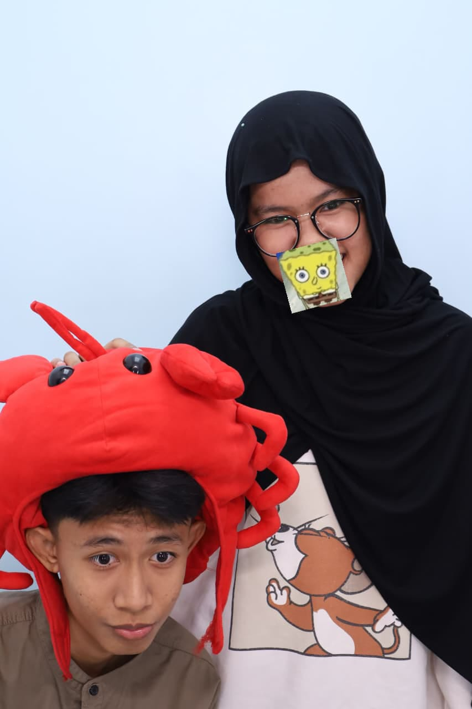
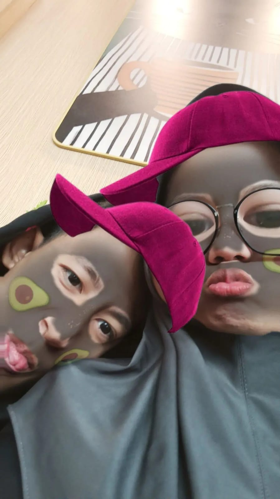
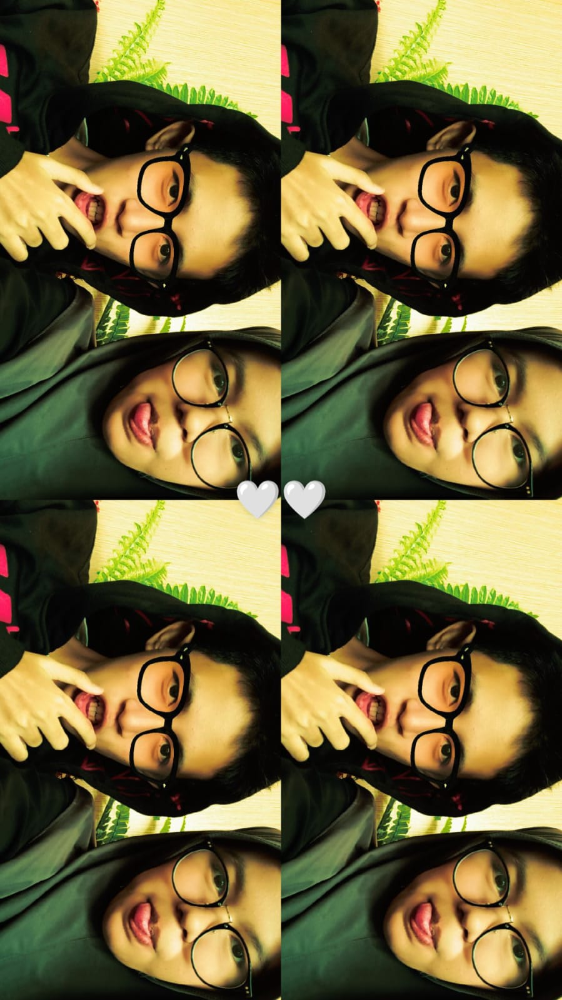
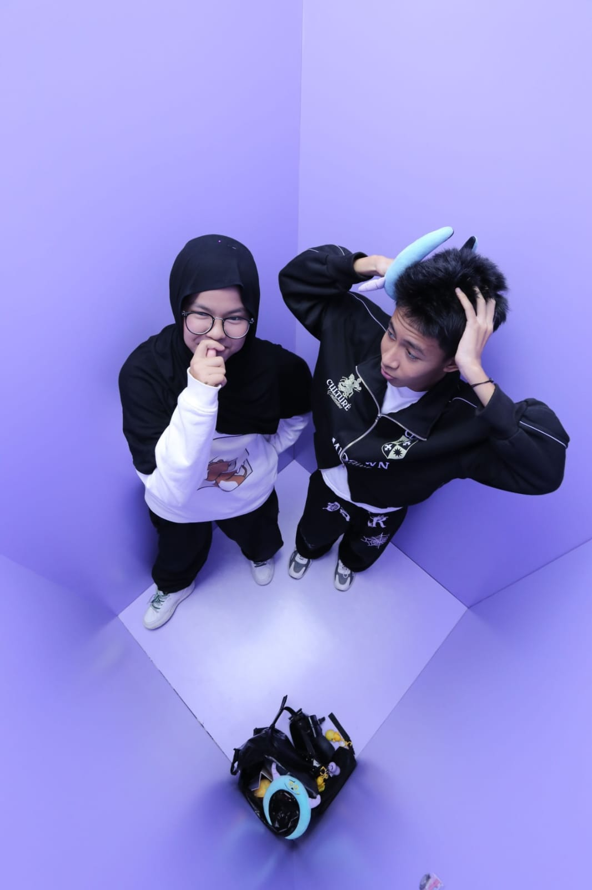
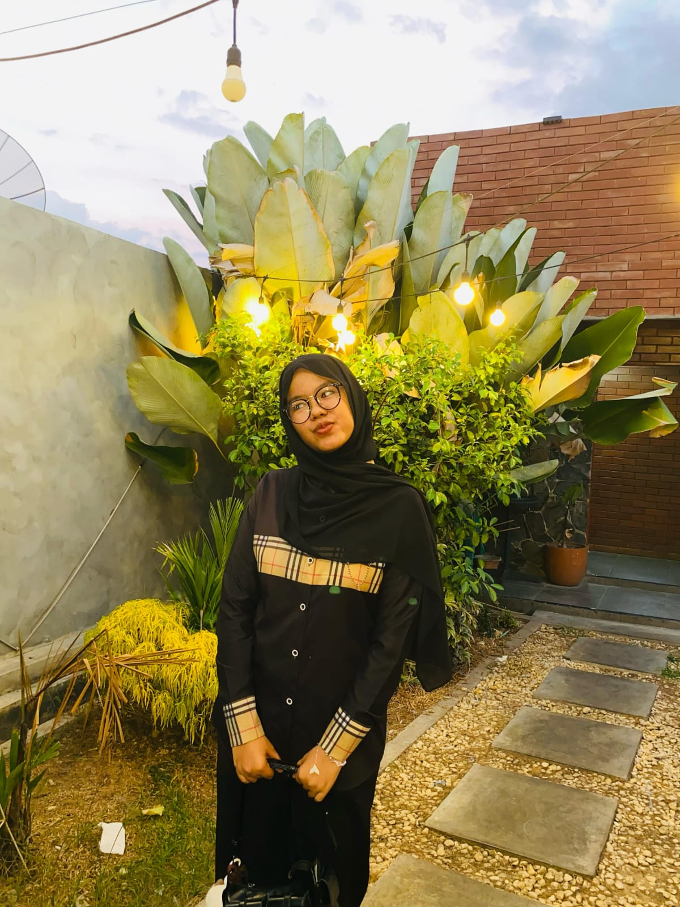
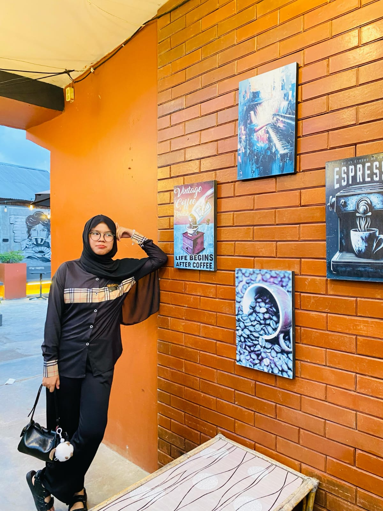
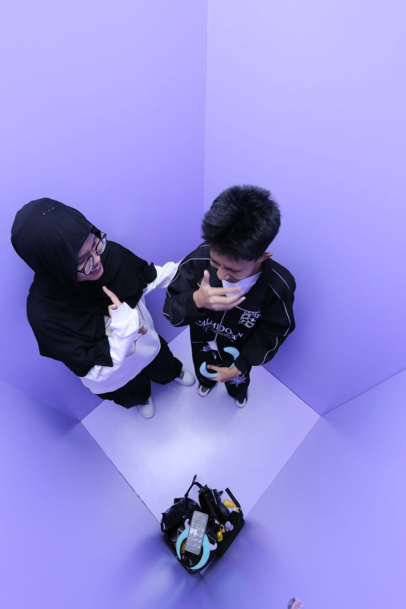
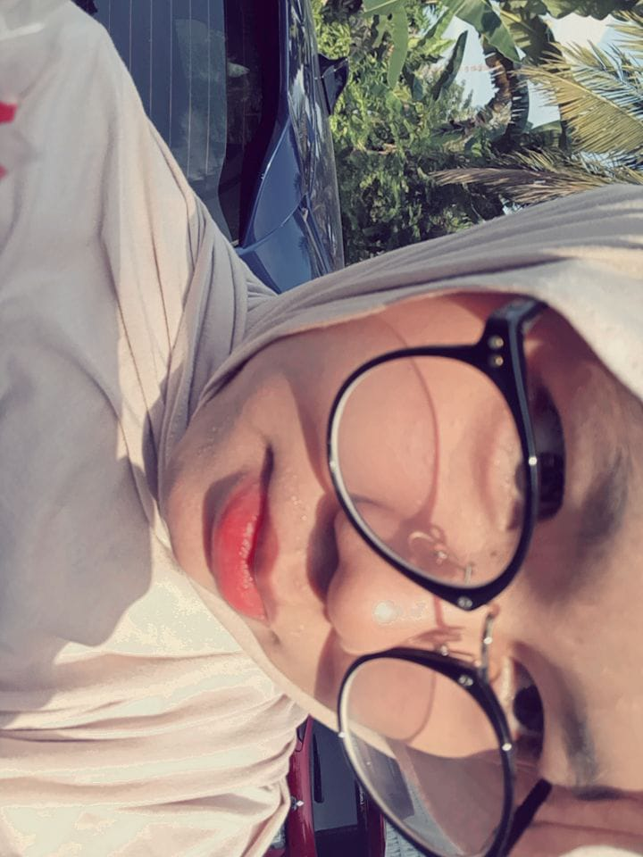
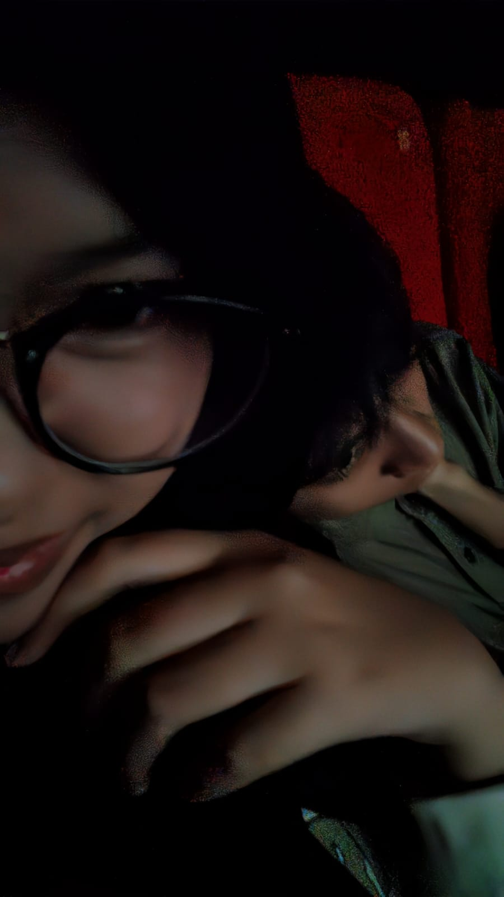
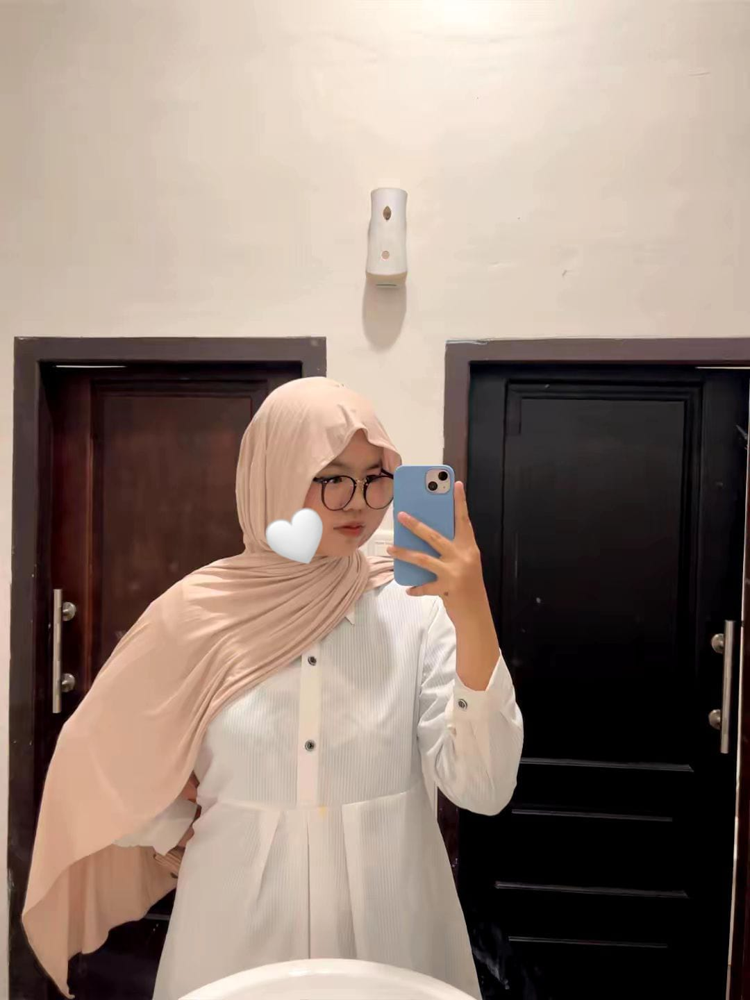

Ada sesuatu yang ingin aku tunjukkan untuk kamu.
Semoga kamu suka dengan hadiah kecil ini.
TO MY FAVORITE PERSON
Happy Birthday, My Love ♡
Selamat bertambah usia, sayang.
Semoga hari-harimu selalu dipenuhi kebahagiaan.
♡ Since 8 Februari 2026
OUR LITTLE MEMORIES
Beautiful Memories
Beberapa potongan kecil dari cerita kita yang selalu ingin aku ingat.

Our first memory
Salah satu momen yang selalu aku ingat.

My favorite smile
Senyummu adalah salah satu hal terindah yang pernah kutemukan.

Just us
Sesederhana itu, melihatmu saja sudah cukup membuatku bahagia.

Happy little moment
Hal kecil yang menjadi kenangan besar.

My comfort place
Di antara banyak hal indah, kamu tetap yang paling istimewa.

Unforgettable day
Hari yang ingin kuulang lagi.

Always together
Semoga masih banyak cerita yang bisa kita ukir bersama.

Sweetest memory
Senyummu selalu punya cara tersendiri untuk membuat hariku indah.

My happy place
Ada ketenangan yang selalu kutemukan saat melihatmu.

To more memories
Masih banyak cerita indah yang ingin aku lalui bersamamu.
MOVING MEMORIES
Our Little Videos
Beberapa momen yang ingin aku simpan lebih lama.
A LETTER FOR YOU
Words From My Heart
Ada sedikit cerita dan beberapa hal yang ingin aku bagikan denganmu. Bacalah perlahan, ya. ♡
01
Untuk Kamu, Sayang
Selamat ulang tahun, sweet seventeen orang tersayangku. Terima kasih sudah hadir
dan menjadi bagian dari cerita hidupku. Aku mungkin tidak selalu
bisa memberikan hal-hal yang sempurna, tetapi aku akan selalu
berusaha memberikan yang terbaik untukmu. Semoga di usia barumu
ini, kamu semakin bahagia, semakin kuat, dan semua hal yang kamu
impikan bisa perlahan menjadi kenyataan. Hadiah yang ku kasih tolong di jaga baik" yaa,
and jangan dibuang yaa walaupun kamu ga suka di simpan aja okeii makasi orang kesayanganku.
02
What I Need to Tell You
Jujur, bukan hal yang mudah bagiku untuk menulis ini. Ada banyak hal yang sudah aku pikirkan sebelum akhirnya memberanikan diri menyampaikan semuanya.
Kita masih sama-sama muda, masih berusia 17 tahun, dan perjalanan hidup kita masih sangat panjang. Ada banyak hal yang ingin aku capai dan banyak impian yang ingin aku wujudkan.
Sebagai seorang anak pertama laki-laki, aku punya tanggung jawab dan harapan besar untuk keluargaku. Aku ingin suatu hari nanti bisa membahagiakan orang tuaku, membantu memperbaiki keadaan ekonomi keluarga, dan menjadi seseorang yang bisa diandalkan. Aku tahu keadaan keluargaku saat ini belum sepenuhnya mencukupi, tetapi justru itu yang membuatku ingin berusaha lebih keras untuk masa depan.
Aku tidak ingin membandingkan keadaan kita, apalagi membuatmu merasa bahwa keadaanmu yang lebih baik adalah sebuah kesalahan. Aku hanya sedang belajar memahami keadaan diriku sendiri dan apa saja yang perlu aku perjuangkan.
Karena itu, aku merasa perlu memberikan lebih banyak waktu untuk diriku sendiri, pendidikan, impian, dan masa depan. Aku ingin belajar menjadi pribadi yang lebih mandiri dan bertanggung jawab sebelum melangkah lebih jauh dalam kehidupan.
Aku sudah memikirkan ini baik-baik, dan aku merasa lebih baik jika kita mengakhiri hubungan sebagai pasangan. Bukan karena kamu kurang baik, bukan karena aku tidak menghargai kehadiranmu, tetapi karena saat ini aku ingin memprioritaskan perjalanan hidup dan tanggung jawabku sendiri.
Aku berharap kita masih bisa berteman. Aku tidak ingin semua kenangan baik yang pernah kita punya berubah menjadi kebencian. Namun, aku juga mengerti jika kamu membutuhkan waktu dan jarak untuk menerima keputusan ini. Aku tidak akan memaksamu untuk langsung baik-baik saja.
Maaf jika keputusan ini menyakitkan. Aku tahu mungkin tidak mudah untuk menerimanya, tetapi aku berharap kamu bisa memahami bahwa keputusan ini bukan untuk merendahkanmu ataupun menyalahkan siapa pun.
Terima kasih karena sudah pernah menjadi bagian dari perjalanan hidupku. Aku berharap kamu bisa terus tumbuh menjadi perempuan yang hebat, meraih semua impianmu, membahagiakan keluargamu, dan mendapatkan banyak kebahagiaan dalam hidupmu.
Jaga dirimu baik-baik, ya. Kita masih punya perjalanan panjang untuk mengejar impian masing-masing.
Terima kasih untuk semua cerita yang pernah kita punya. 08 Februari 2026 - 11 November 2026❤️
03
My Wishes for Your Future
Aku tahu selama ini tidak mudah bagimu. Ada banyak hal yang mungkin kamu pendam sendiri, banyak perasaan yang tidak bisa kamu ceritakan, dan terkadang apa pun yang kamu lakukan terasa salah di mata orang yang kamu harapkan bisa mengerti dirimu. Namun, aku ingin kamu tahu bahwa kamu adalah perempuan hebat yang punya banyak kemampuan, prestasi, dan impian. Jangan pernah meragukan dirimu hanya karena tidak semua orang bisa memahami dan mendukungmu. Tetaplah berjuang meraih apa yang kamu inginkan dan jangan terlalu keras pada dirimu sendiri. Jika suatu saat kamu membutuhkan teman untuk bercerita atau sekadar seseorang yang mau mendengarkan, aku akan berusaha ada untukmu, meskipun nantinya hanya sebagai teman. Terakhir, aku ingin meminta maaf karena sudah membuatmu sedih, terlebih lagi di hari kelahiranmu. Aku tahu seharusnya hari ini menjadi hari yang penuh kebahagiaan untukmu, dan aku benar-benar minta maaf karena keputusan ini justru membawa kesedihan. Aku berharap kamu tetap bisa tersenyum, meraih semua impianmu, dan menemukan banyak kebahagiaan dalam perjalanan hidupmu. Selamat bertambah usia, tetaplah menjadi perempuan hebat yang aku kenal. Aku akan selalu mendoakan yang terbaik untukmu. ❤️